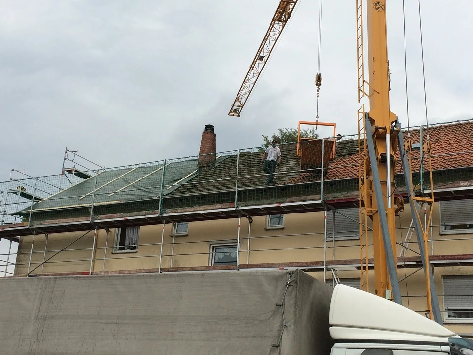

Eigener Kran
Kranarbeiten gehören zum Leistungsangebot von WEHA.
Kran & Gerüst
Eigener Kran und Gerüstbau unterstützen unsere Arbeit am Gebäude. Die erforderlichen Leistungen stimmen wir auf den Ablauf Ihres Vorhabens ab.

Aus unserer Projektgalerie: DinkelsbühlKranarbeiten gehören zum Leistungsangebot von WEHA.
Gerüste passend zu den erforderlichen Arbeiten berücksichtigen.
Dacharbeiten und begleitende Leistungen in einem nachvollziehbaren Ablauf koordinieren.
Weitere Leistungen
Der nächste Schritt.
Neubau, Sanierung oder eine Frage zum Bestand – wir hören gerne von Ihnen.
Reden wir darüber 09851 / 5893666